8 Grafiken
8.1 Grafiken für univariate Verteilungen
8.1.1 Allgemeines
- R bietet flexible Gestaltungsmöglichkeiten für eine Reihe verschiedener Graphiken
- Komplexere Grafiken können mit dem Paket ggplot2 erstellt werden
- Generell gilt: Auf „Nutzerfreundlichkeit“ und Qualität der Grafiken achten (z.B. Legenden)
Fast alle Grafiken können mit folgenden Argumenten näher definiert werden:
- main = “…”: Überschrift
- col = “…”: Farbe(n); Mehrere Farben mit c(“…”, “…”, …) eingeben
- xlab = “…” und ylab = “…”: Titel der x- bzw. y-Achse
- xlim = c(…, …) und ylim = c(…, …): Achsenlimits …
8.1.2 Darstellung von Häufigkeiten
Kreisdiagramme mit pie() erstellen
- Datenformat: Variable in Häufigkeitstabelle (table())
Balkendiagramme mit barplot() erstellen
- Datenformat: Variable in Häufigkeitstabelle (table())
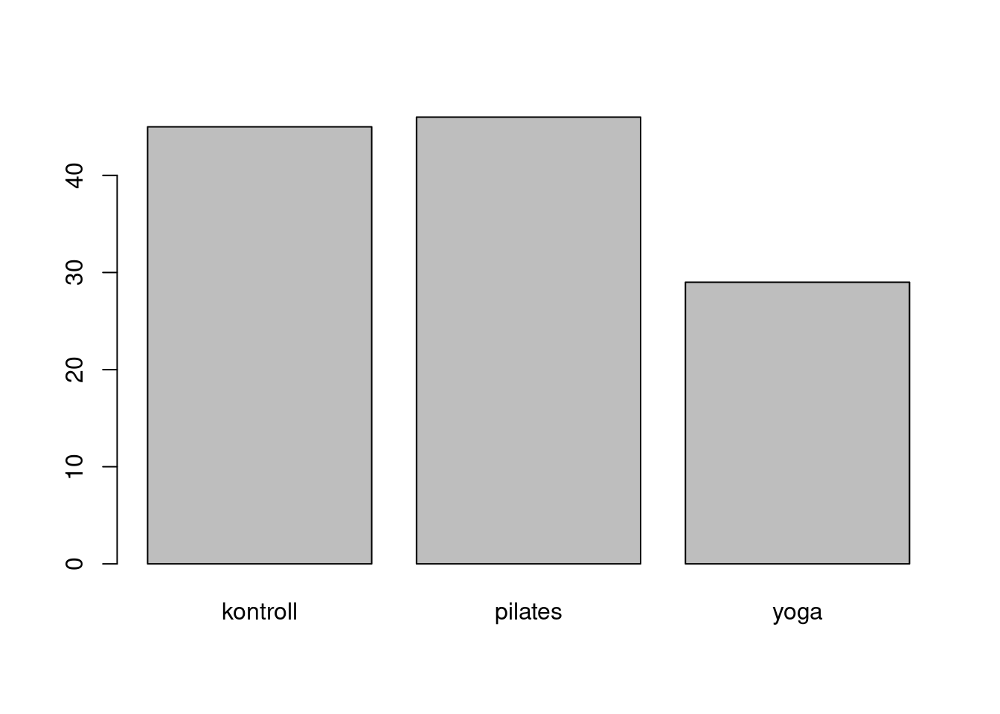
8.1.3 Darstellung von Häufigkeiten
Mit einigen zusätzlichen Optionen:
barplot(tab,
main = "Absolute Häufigkeiten der Gruppen",
col = c("coral2", "darkcyan", "goldenrod3"),
names.arg = c("Kontrollgruppe", "Pilates", "Yoga"),
ylab = "Absolute Häufigkeit",
ylim = c(0, 50))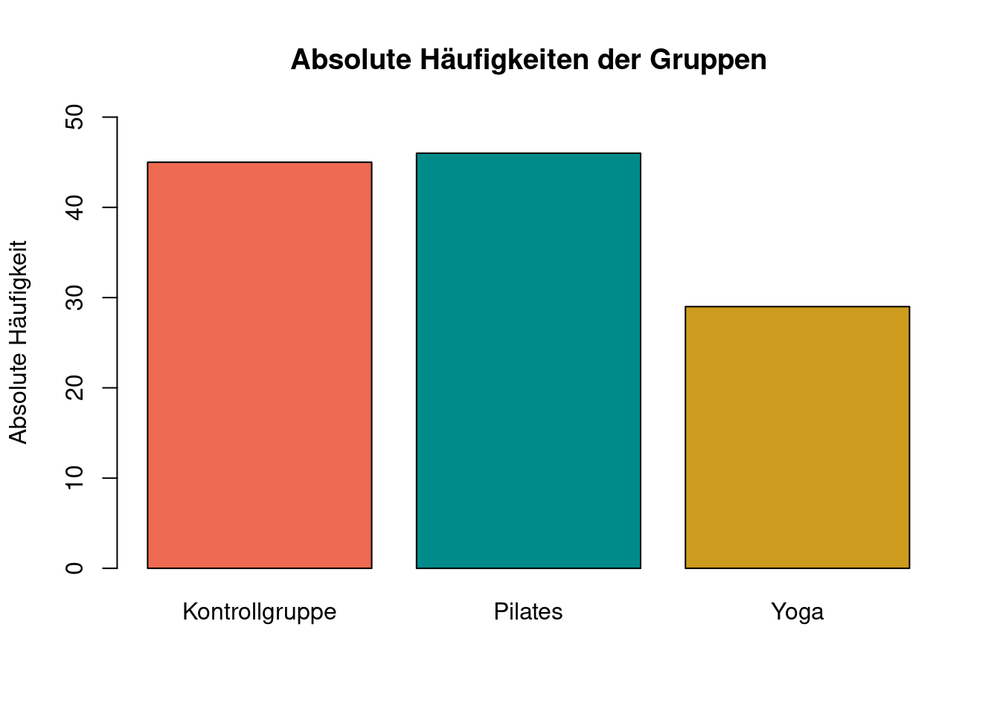
8.1.4 Darstellung von Verteilung
hist(x, breaks, freq, …) zeigt die Verteilung einer Variablen in einem Histogramm
x: Variable, für die das Histrogramm erzeugt werden soll (Wird mit dem $-Operator ausgewählt)
breaks: Wie viele Balken sollen gebildet werden?
- Keine Angabe: Automatische Auswahl
- Einzelne Zahl n: Daten werden in n Balken geteilt
- Vektor: Balken werden zwischen den angegebenen Stellen gebildet
- z.B. breaks = c(0,1,2,3) → 3 Balken: 0 bis 1, 1 bis 2 und 2 bis 3
- z.B. breaks = seq(0,100,20) → erstellt Werte im Schritt von 20 im Bereich zwischen 0 und 100 (5 Balken)
freq: Soll statt der absoluten die relative Häufigkeit geplottet werden? (TRUE = ja)
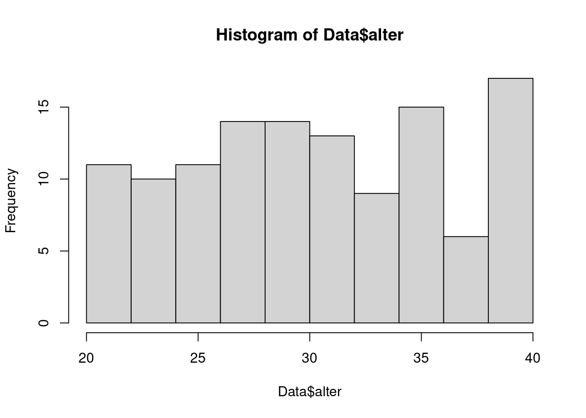
Mit einigen zusätzlichen Optionen:
hist(Data$alter, main = "Histogramm von Alter",
col = "darkolivegreen3", xlab = "Alter",
ylab = "Häufigkeit", ylim = c(0, 20))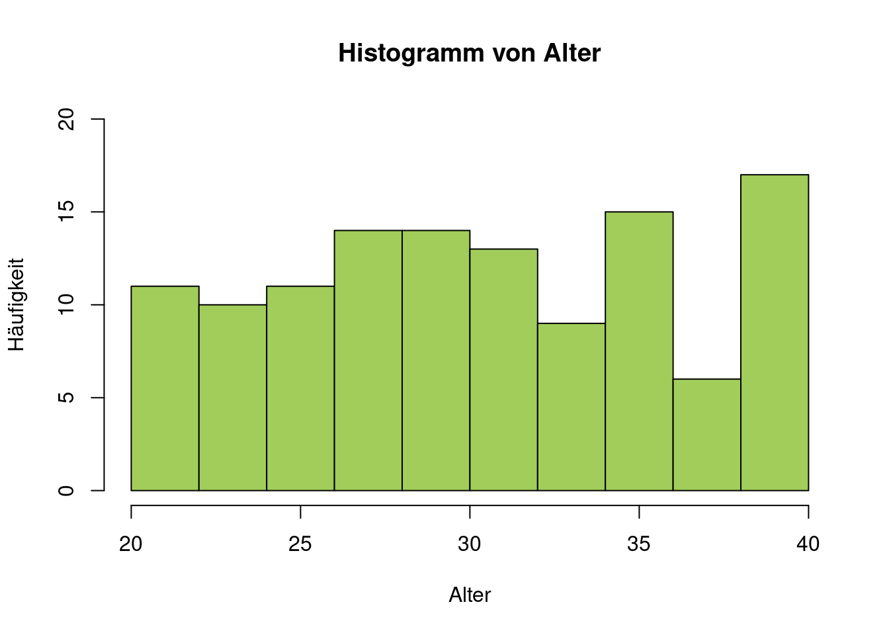
boxplot(x, range =, …) erstellt einen bzw. mehrere Boxplots
x: kann Vektor, Dataframe oder Formel sein
- Bei Eingabe eines Dataframes werden Boxplots für alle enthaltenen Variablen erzeugt
- Formeln ermöglichen Trennung nach Gruppen (s.u.)
range: Definiert die maximale Länge des Whiskers
- Werte außerhalb werden als Ausreißer dargestellt
- z.B.: range = 2 (2 * Interquatilabstand bzw. Boxlänge)
- default: range = 1.5
boxplot(Data$zufri,
col = "darksalmon",
main = "Boxplot der Zufriedenheitswerte",
ylab = "Zufriedenheitswert",
ylim = c(0, 6))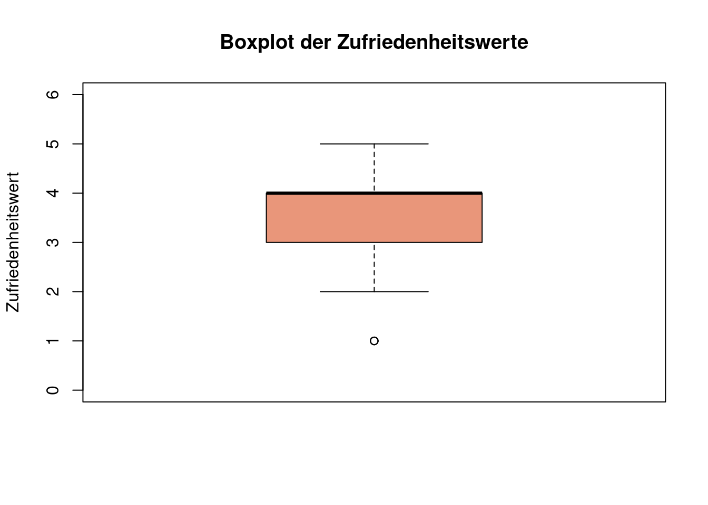
8.2 Grafiken für bivariate Verteilungen
8.2.1 Verteilung einer metrischen auf eine kategoriale Variable
Mithilfe von Boxplots lässt sich auch die Verteilung einer kategorialen Variable auf eine metrische Variable
boxplot(A ~ B + C + …) erzeugt Boxplots für alle möglichen Kombinationen von Faktorstufen getrennt
- A: metrische abhängige Variable
- B,C: kategoriale Variablen nach deren Ausprägungen aufgeschlüsselt wird
boxplot(Data$angst ~ Data$gruppe,
col = "deeppink",
main = "Boxplots der Angstwerte nach Gruppen getrennt",
ylab = "Angstwerte",
ylim = c(0, 6),
names = c("Kontrollgruppe", "Pilates", "Yoga"))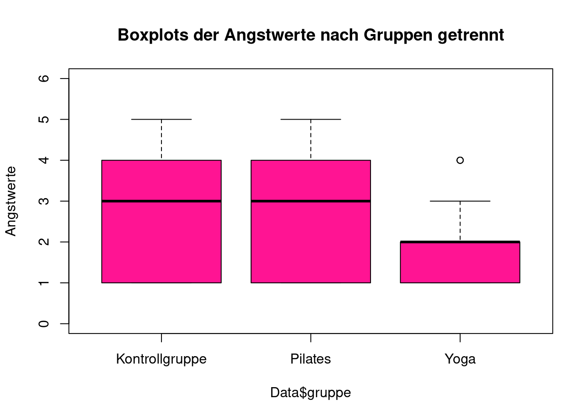
8.2.2 Verteilung zweier metrischer Variablen
Für zwei metrische Variablen wird meistens die Darstellungsform des Streudiagramms gewählt, was mit dem Befehl plot(x,y,…) erstellt werden kann
- x: Erste Variable ()
- y: Zweite Variable
- …: Weitere Graphikparameter (z.B. pch: Punkttyp \(\rightarrow\) ?pch)
plot(Dataset$item1, Dataset$item2,
ylab = "item1", xlab = "item2",
main = "Streudiagramm von Item 1 und Item 2",
xlim = c(0, 6), ylim = c(0, 6), pch = 18, col = "firebrick4")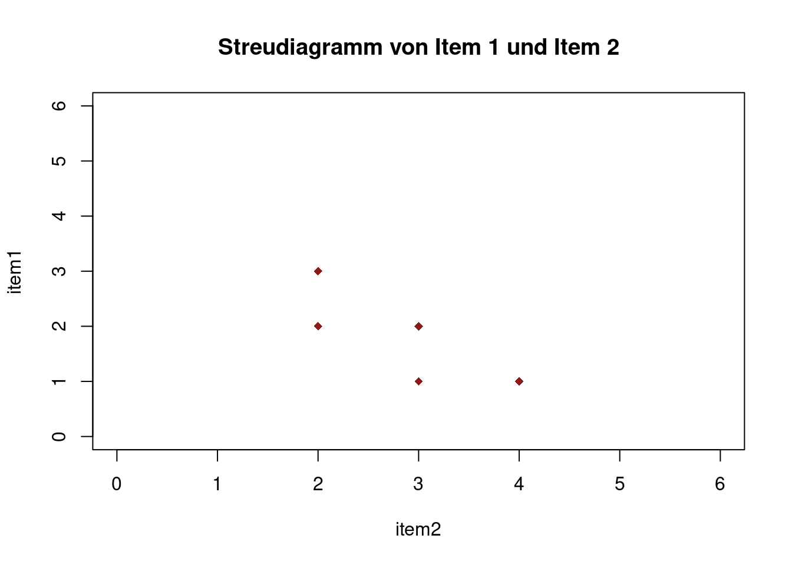
Der Befehl abline() wird (separat) im Anschluss von plot() ausgeführt
Mit abline(h = …, v = … , lwd = …, lty = …) können horizontale (h) bzw. vertikale (v) Linien an beliebiger Position eingefügt werden
- h/v:Wert durch welchen die Linie verlaufen soll
- lwd: legt die Stärke (Dicke) der Geraden fest (default = 1)
- lty: legt den Linientyp fest \(\rightarrow\) ?par
plot(Dataset$item1, Dataset$item2,
ylab = "Item 2", xlab = "Item 1",
main = "Streudiagramm von Item 1 und Item 2",
xlim = c(0, 6), ylim = c(0, 6),
pch = 18,
col = "firebrick4")
abline(h = mean(Dataset$item2),
v = mean(Dataset$item1),
col = "black",
lty = 2)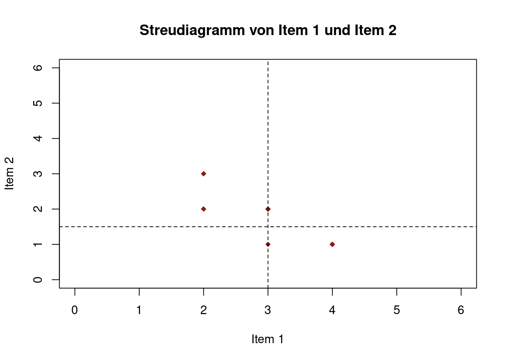
Mit abline(fit) wird die Regressionsgerade in das bestehende Streudiagramm eingezeichnet
- fit entspricht dem definierten Modell, z.B. fit = lm(item2 ~ item1)
model4 <- item2 ~ item1
fit4 <- lm(model4, Dataset)
plot(Dataset$item1, Dataset$item2,
ylab = "Item 2", xlab = "Item 1",
main = "Streudiagramm von Item 1 und Item 2",
sub = "Item 2 = 3.5000 - 0.6667 * Item 1",
xlim = c(0, 6), ylim = c(0, 6),
pch = 18,
col = "firebrick4")
abline(fit4,
lwd = 2,
col = "darkslategrey",
lty = 2)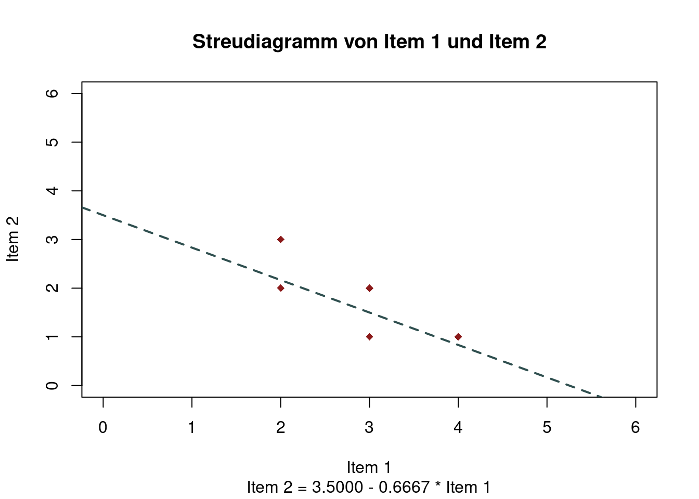
8.3 Tabellen
8.3.1 Mehrfelder Tabelle
kontroll pilates yoga
m 14 12 6
w 31 34 23Korrelations Matrizen
item1 item2 item3
item1 1.0000000 -0.7698004 0.6123724
item2 -0.7698004 1.0000000 -0.4714045
item3 0.6123724 -0.4714045 1.00000008.3.2 Formatierung
Das Package stargazer bietet den Befehl stagazer(…,type = “html”, title = “title”, out = “…”,)
- …: einen Vektor, Matrix, Datensatz oder Modell
- type: Welches Dateiformat soll der Befehl ausgeben. Beispielsweise “html”, “latex” oder “text”
- title: Überschrift der Tabelle
- out: Name der Datei. Abhängig von type entweder mit .html, .tex oder .txt am Ende. Wenn davor kein Dateipfad angegeben wird, wird die Datei im Projektordner gespeichert.
…noch viele weitere Möglichkeiten für Anpassungen. Siehe ?stargazer()
Anwendung an Beispielen
Korrelationstabelle
library(psych)
Dataset <- read.table("data/Daten.txt", header = TRUE)
Korrelationstabelle<- cor(Dataset[,2:4], method = "pearson")
Korrelationstabelle
item1 item2 item3
item1 1.0000000 -0.7698004 0.6123724
item2 -0.7698004 1.0000000 -0.4714045
item3 0.6123724 -0.4714045 1.0000000library(stargazer)
stargazer(Korrelationstabelle,
type = "html",
title = "Korellationstabelle",
out = "Korellationstabelle.html")Aussehen in der html Datei:
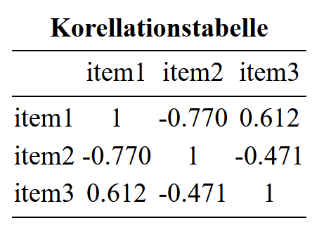
Für Übertragung in Word einfach in der .html Dateien markieren, kopieren und in Word einfügen
Regressionsmodelle:
fit1 <- lm(data = Dataset, formula = item1 ~ item2 + item3)
summary(fit1)
Call:
lm(formula = item1 ~ item2 + item3, data = Dataset)
Residuals:
Min 1Q Median 3Q Max
-0.75000 -0.33036 -0.08929 0.33036 0.64286
Coefficients:
Estimate Std. Error t value Pr(>|t|)
(Intercept) 2.8929 1.1752 2.462 0.0434 *
item2 -0.7143 0.2832 -2.523 0.0397 *
item3 0.3929 0.3003 1.308 0.2322
---
Signif. codes:
0 '***' 0.001 '**' 0.01 '*' 0.05 '.' 0.1 ' ' 1
Residual standard error: 0.5297 on 7 degrees of freedom
Multiple R-squared: 0.6726, Adjusted R-squared: 0.5791
F-statistic: 7.191 on 2 and 7 DF, p-value: 0.020088.3.3 Tabellen und Modelle
library(stargazer)
stargazer(fit1,
type = "html",
title = "Beispiel Regression",
out = "Regression.html")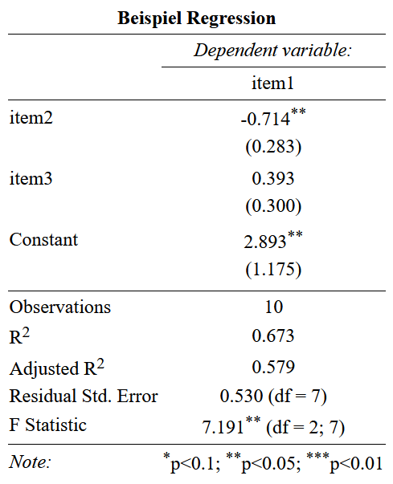
library(stargazer)
stargazer(fit1,
type = "html",
title = "Beispiel Regression",
out = "Regression.html",
ci = TRUE,
covariate.labels = c("sozioökonomischer status",
"Alter","Konstante"),
dep.var.labels = "Einkommen",
dep.var.caption = "Abhängige Variable")- ci: wenn TRUE ersetzt die angegebenen Standardfehler mit dem Konfifenzintervall für das Konfidenzniveau von 95 Prozent
- covariate.labels: ein Character-Vektor, der die Namen der unabhängigen Variablen ersetzt
- dep.var.labels: Name der abhängigen Variable
- dep.var.caption: Überschrift über die Abhängige Variable
Resultat
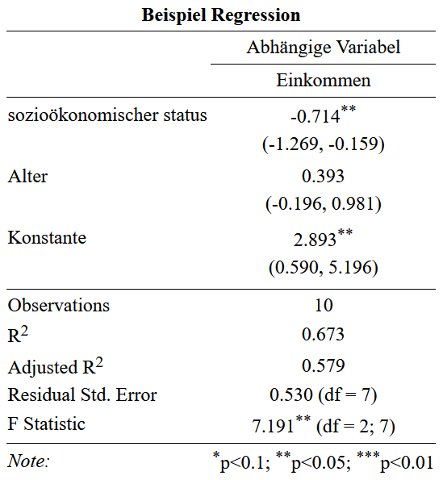